非hero视觉组审查证据：实际1x
这些截图采集时全部是未批准候选，来自实际 Renderer，摄像机 .62，冻结规则供态，显式 candidate animation preview。GIF 保持原始130×150截图像素，不代表自然游玩或性能验收。root后续批准记录见 ../nonhero-actor-approval.json。母体核心GIF为未暴露/暴露两个状态的对照，展示切换间隔不代表运行时循环。
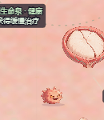
enemy.basic.walk
4帧 / 7.14fps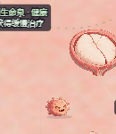
enemy.basic.windup
2帧 / 7.14fps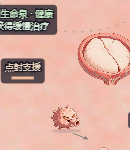
enemy.thinRay.walk
4帧 / 7.14fpsenemy.thinRay.windup
2帧 / 6.25fps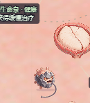
enemy.carapace.walk
4帧 / 7.14fps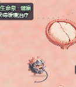
enemy.carapace.windup
2帧 / 6.25fps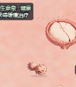
enemy.fission.parent.walk
4帧 / 7.14fps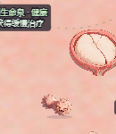
enemy.fission.parent.windup
2帧 / 6.25fps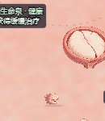
enemy.fission.child.walk
4帧 / 9.09fpsenemy.fission.child.windup
2帧 / 6.25fps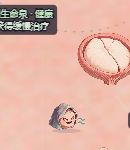
enemy.mimic.walk
4帧 / 6.25fpsenemy.mimic.windup
2帧 / 6.25fps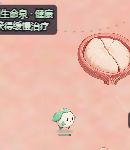
immune.front_right.crawl
4帧 / 7.14fps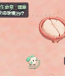
immune.front_right.bite
4帧 / 7.14fps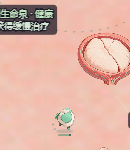
immune.back_right.crawl
4帧 / 8.00fpsimmune.back_right.bite
4帧 / 10.00fps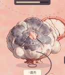
mother.base
4帧 / 4.00fpsmother.core
2个核心状态对照；非运行时循环